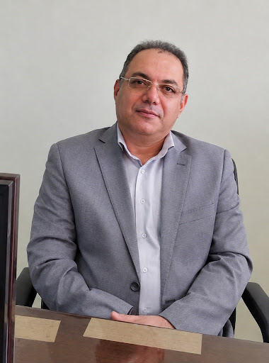
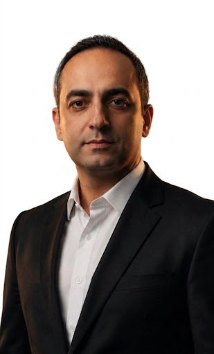

درباره FIT Journal
آشنایی با رسالت، اهداف و هویت نشریه علمی-دانشجویی مهندسی مکانیک – ساخت و تولید دانشگاه تبریز
نشریه تخصصی چِفْت (FIT)
Manufacturing Engineering Journal تأسیس و فعالیت مستمر از پاییز ۱۴۰۵دانشگاه تبریز
دانشکده مهندسی مکانیک · گروه ساخت و تولید
سامانه نشریات دانشجویی arrow_outwardتوسعه دانش ساخت، همگام با استانداردهای نوین مهندسی جهان
«FIT Journal، نشریه علمی و فرهنگی دانشجویی مهندسی مکانیک – ساخت و تولید دانشگاه تبریز است که با هدف گسترش دانش تخصصی، معرفی پژوهشهای نوین و ایجاد بستری برای تبادل ایدهها و تجربیات علمی فعالیت میکند.»
این نشریه با تمرکز بر پیوند میان علوم بنیادین مکانیک و فناوریهای کاربری تولید قطعات دقیق شکل گرفته است. در دورانی که صنایع مدرن به سمت اتوماسیون پیشرفته، ساخت افزایشی هیبریدی و بهینهسازی زنجیره تولید حرکت میکنند، FIT Journal میکوشد مستندسازی دستاوردهای دانشگاهی و انتقال تجربیات آزمایشگاهی دانشجویان و محققان را به صورت مدون ارائه نماید.

اهداف و رسالت سازمانی
نقشهراه تحریریه برای تبدیل شدن به بستری علمی و الهامبخش در حوزه مهندسی ساخت و تولید
ارتقای دانش مهندسی و نشر دستاوردهای پژوهشی دانشجویان و اساتید
مهیاسازی تریبونی مستند برای گزارش پروژههای کاربردی، یافتههای آزمایشگاهی و بازتاب پژوهشهای دانشجویی با رویکرد ارتقای سواد علمی جمعی.
ایجاد پل ارتباطی بین بدنه دانشگاهی و صنایع ساخت و تولید
کاهش فاصله ادراکی میان تئوریهای دانشگاهی و چالشهای میدانی کارخانجات صنعتی؛ از طریق تهیه گزارشهای تخصصی و تحلیل مسائل خطوط تولید.
ترویج ادبیات علمی و نگاه نوآورانه به فرایندهای مدرن تولیدی
تمرکز بر سرفصلهای لبه فناوری از قبیل ساخت افزایشی فلزی، بهکارگیری الگوریتمهای هوش مصنوعی در عیبیابی ابزار و اتوماسیون هوشمند نسل ۴ صنعت.
حوزههای تخصصی تحت پوشش
هیئت تحریریه نشریه مقالات تحلیلی، ترجمههای تخصصی، چکیده پروژهها و مقالات پژوهشی مرتبط با ۵ حوزه اصلی مهندسی ساخت را دریافت و پس از بررسی منتشر مینماید.
اصالت علمی، ساختار مهندسی دقیق، رعایت اصول نگارش آکادمیک فارسی و دارا بودن بار تخصصی برای جامعه مهندسی.
ماشینکاری پیشرفته و میکروماشینکاری
تحلیل فرایندهای ماشینکاری تخلیه الکتریکی (EDM)، وایرکات، ماشینکاری التراسونیک، لیزر و بهینهسازی پارامترهای برش و سایش ابزار در دقتهای میکرومتری.
فناوریهای ساخت افزایشی (3D Printing)
ساخت لایهای قطعات فلزی (SLM/DMLS) و پلیمری، پرینت سهبعدی بایومتریالها، متالورژی پودر و بررسی خواص مکانیکی و تنشهای پسماند در ساخت افزایشی.
اتوماسیون صنعتی، مانیتورینگ و رباتیک
سیستمهای کنترل کیفیت بلادرنگ، دادهبرداری و سنسورینگ ماشینآلات، رباتهای صنعتی جابجایی و جوشکاری، و کاربرد اینترنت اشیاء صنعتی (IIoT).
علم مواد، متالورژی ساخت و شکلدهی
تحلیل فرایندهای نورد، اکستروژن، هیدروفرمینگ، ریختهگری دقیق، بررسی ریزساختار و متالورژی جوشکاری، و عملیات حرارتی آلیاژهای فوق پیشرفته.
طراحی به کمک کامپیوتر (CAD / CAM / CAE)
SEC-05مدلسازی پارامتریک، شبیهسازی اجزای محدود (FEA) فرایندهای تولید، تحلیل جریان مذاب و شبیهسازی تزریق پلاستیک، و کدنویسی و بهینهسازی مسیر ابزار CNC.
صاحب امتیاز، استاد مشاور و سردبیر
معرفی ارکان رسمی نشریه علمی تخصصی چفت در دانشکده مهندسی مکانیک دانشگاه تبریز
محمد ولیزاد
دانشجوی کارشناسی ارشد مهندسی مکانیک ساخت و تولید · دانشکده مهندسی مکانیک دانشگاه تبریز
سخن مدیرمسئول
یادداشت افتتاحیه و چشمانداز نشریه علمی تخصصی چفت«به نام خدا؛ دانش و فناوری، زمانی میتوانند مسیر توسعه و پیشرفت را هموار کنند که در کنار پژوهش و تولید دانش، زمینهای برای گفتوگو، تبادل تجربه و ارتباط میان پژوهشگران، متخصصان و نسل جوان مهیا شود.»
نشریه مهندسی مکانیک ساخت و تولید با همین رویکرد تلاش میکند بستری برای طرح دیدگاههای علمی، معرفی دستاوردهای نوین و ایجاد ارتباط میان جامعه دانشگاهی و جریانهای روز صنعت و فناوری فراهم آورد.
ما در نشریه چفت بر این باوریم که ساخت و تولید آینده، حاصل پیوند میان دانش، خلاقیت، فناوری و همکاری خواهد بود. ازاینرو، تلاش میکنیم در کنار پرداختن به موضوعات تخصصی و علمی، ارتباط با پژوهشگران و متخصصان برجسته را نیز توسعه دهیم و دیدگاههای آنان را در اختیار دانشجویان و علاقهمندان این حوزه قرار دهیم.
از تمامی استادان، پژوهشگران، دانشجویان و اعضای تیم نشریه که با ایدهها، تلاش و همراهی خود در مسیر ارتقای کیفیت این مجموعه نقش دارند، صمیمانه تشکر میکنم. امیدوارم نشریه چفت بتواند در مسیر توسعه دانش ساخت و تولید و ایجاد پلی میان دانشگاه، صنعت و نسل آینده مهندسان، گامی مؤثر بردارد.

دکتر امیر مصطفیپور
استاد و عضو هیئت علمی دانشگاه تبریزدانشکده مهندسی مکانیک · سرپرست علمی و راهبر پژوهشهای ساخت و تولید
دکتر یعقوب دادگر اصل
دانشیار و عضو هیئت علمی دانشگاه ملی مهارتدبیر علمی و هماهنگکننده امور علمی نشریه چفت

امید بالاخیال
سردبیر و مدیر اجرایی تحریریهدانشجوی دکتری مهندسی مکانیک ساخت و تولید · ناظر ارشد ارزیابی و تدوین مقالات
ساختار اجرایی نشریه
ترکیب سازمانی نشریه چفت با رویکرد شفافیت علمی در دانشکده مهندسی مکانیک دانشگاه تبریز
محمد ولیزاد
دانشجوی کارشناسی ارشد مهندسی مکانیک – ساخت و تولید
محمد ولیزاد
مدیریت کلان و هماهنگی انتشار نشریه چفت
امید بالاخیال
هدایت محتوایی و نظارت علمی بر مقالات شماره
یادداشت شفافیت: اطلاعات کامل شناسنامه و متن کامل مقالات شماره اول در نسخه منتشرشده در سامانه رسمی نشریات دانشگاه تبریز قابل مشاهده است.
علاقهمند به ارسال مقاله یا پیوستن به تیم تحریریه هستید؟
دانشجویان دورههای کارشناسی و تحصیلات تکمیلی دانشکده مکانیک میتوانند مقالات تألیفی، گزارش پروژههای صنعتی و مقالات مروری خود را جهت بررسی و انتشار برای دفتر نشریه ارسال فرمایند.